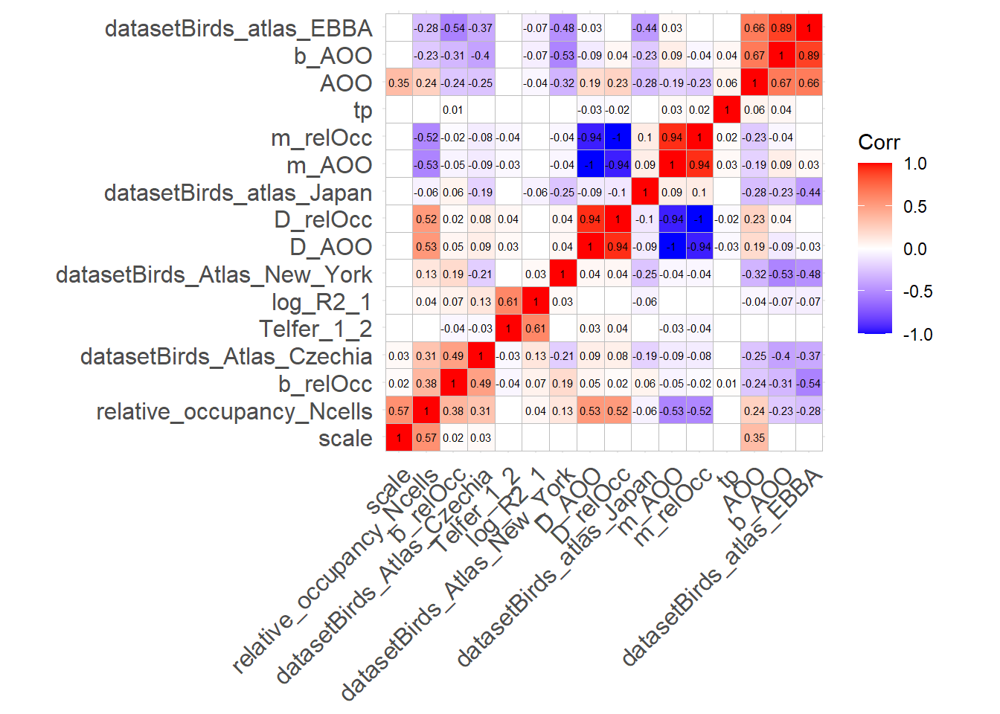
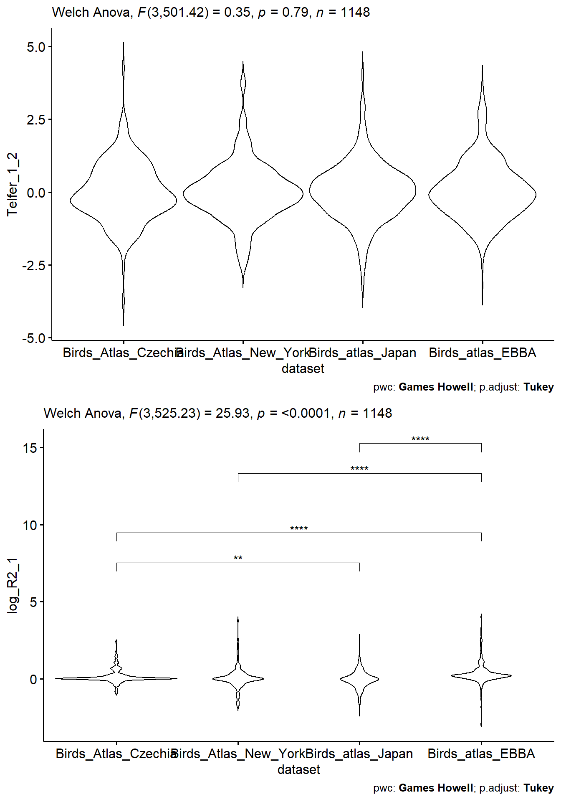
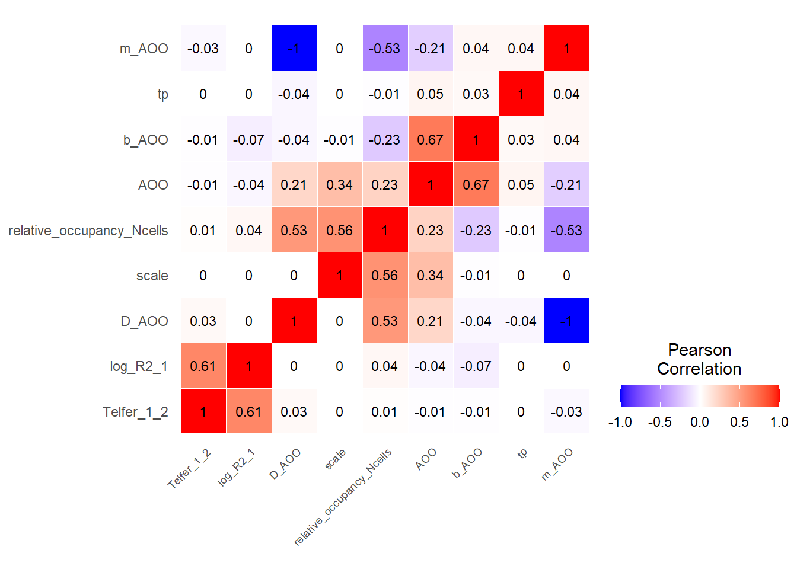
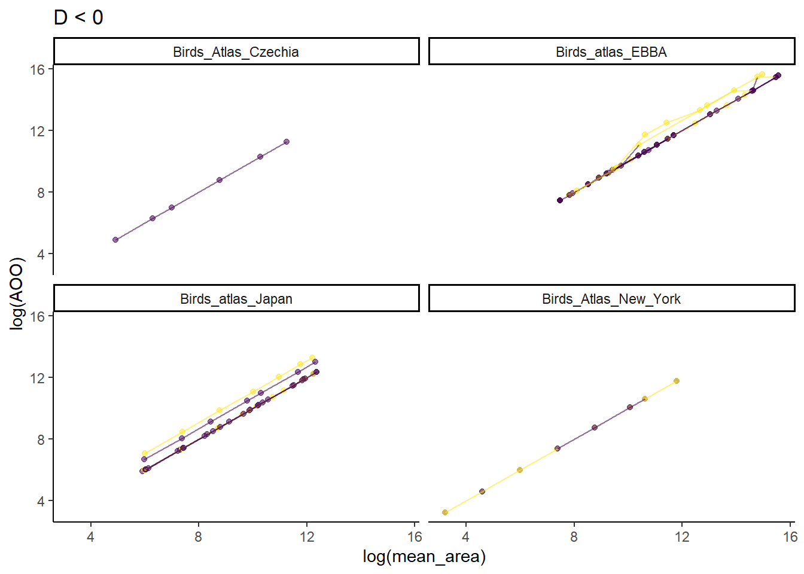
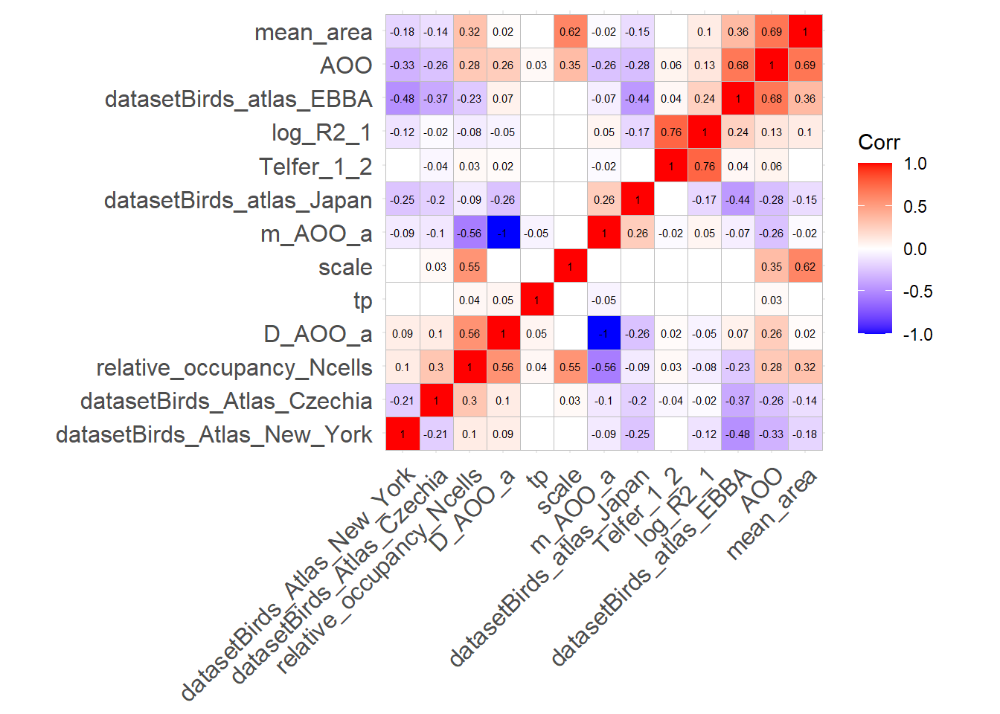
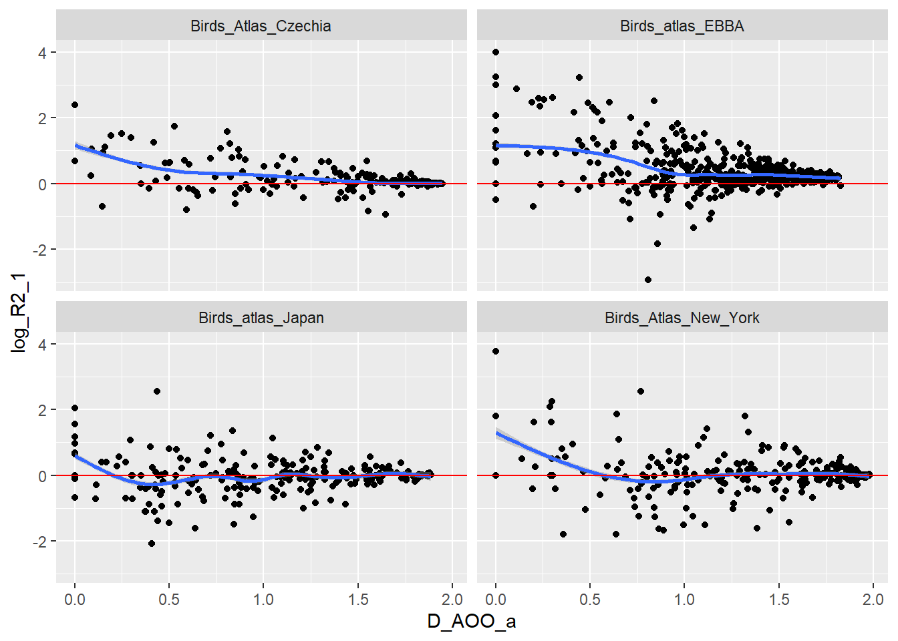
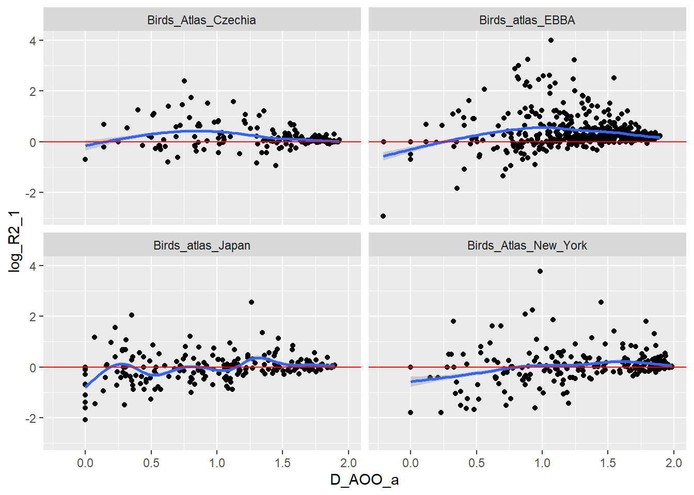
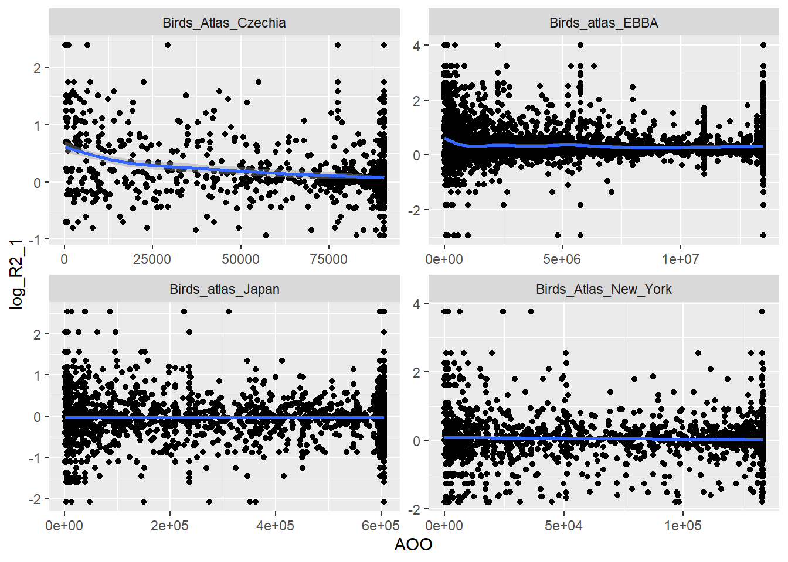
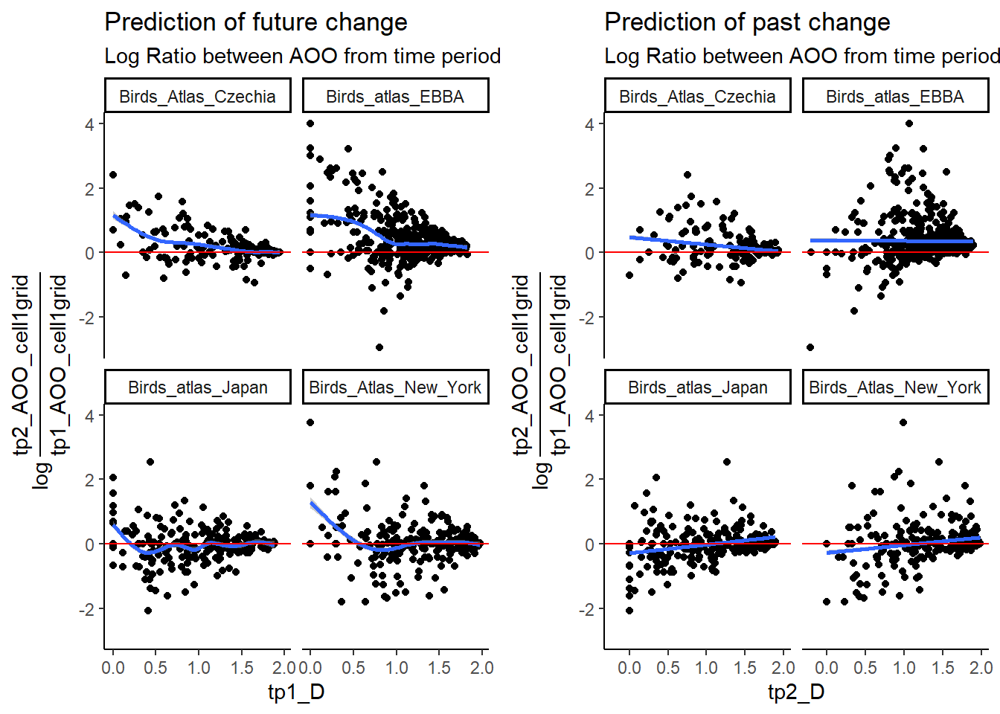

## sparta is not on CRAN and cannot be updated as usual because there is another package called sparta from CRAN but we don't want this.
library(devtools)
install_github('biologicalrecordscentre/sparta')
rm(list=ls())
library(sf)
sf_use_s2(FALSE) # switch spherical geometry off
library(dplyr)
# library(AICcmodavg)
library(tidyr)
library(sparta)
library(ggplot2)
library(ggpubr)
library(rstatix)Atlas Data Prep
Predicting temporal change from static patterns
This first script is dedicated to work the Atlas data and calculate AOO, OAR/D, Log response ratio, Telfer Index, do some collinearty assessments and process the data to remove biases.
1 Libraries
2 Data Paths
This includes the folders to Git, the external predictor data and the atlases. We also set the desired order for the spatial grains so that they are in order from the smallest grain to the largest grain.
source_atlas <- c("c:/Users/wolke/OneDrive - CZU v Praze/Datasets/Processed/Atlases/Replicated/")
source_predictors <- c("c:/Users/wolke/OneDrive - CZU v Praze/Dokumenty/PhD_Projects/StaticPredictors/Data/")
source_Git <- c("c:/Users/wolke/OneDrive - CZU v Praze/Dokumenty/GitHub/BEAST_General_Procedures/Project_Frieda/StaticPredictors/")
# folder path to atlas data
source_paths <- c(paste0(source_atlas, "Birds_Atlas_Czechia/"),
paste0(source_atlas, "Birds_Atlas_New_York/"),
paste0(source_atlas, "Birds_atlas_Japan/"),
paste0(source_atlas, "Birds_atlas_EBBA/"))
# folder path to output folder
out_path <- c(paste0(source_Git, "out/"))
# create path to read in data and grids from variables
data_paths <- c(paste0(source_paths[1],"Birds_Atlas_Czechia_beast_data.rds"),
paste0(source_paths[2], "Birds_Atlas_New_York_beast_data.rds"),
paste0(source_paths[3], "Birds_atlas_Japan_beast_data.rds"),
paste0(source_paths[4], "Birds_atlas_EBBA_beast_data.rds"))
grid_paths <- c(paste0(source_paths[1],"Birds_Atlas_Czechia_grid.gpkg"),
paste0(source_paths[2], "Birds_Atlas_New_York_grid.gpkg"),
paste0(source_paths[3], "Birds_atlas_Japan_grid.gpkg"),
paste0(source_paths[4], "Birds_atlas_EBBA_grid.gpkg"))
atlas_names <- c("Birds_Atlas_Czechia", "Birds_Atlas_New_York","Birds_atlas_Japan", "Birds_atlas_EBBA")
# Define the desired order of factor levels
desired_levels <- factor(c("1", "2","4", "8", "16", "32", "64", "128"), ordered = T,
levels = c("1", "2","4", "8", "16", "32", "64", "128")) 3 Read & Process Data
# Species data =====================
presence_data <- list()
for (i in seq_along(data_paths)){
pres_dat <- readRDS(data_paths[i])
sy <- sort(unique(pres_dat$start_year))
## Add time-period column
pres_dat2 <- pres_dat %>%
mutate(tp = case_when(start_year == sy[1] ~ 1,
start_year == sy[2] ~ 2)) %>%
filter(tp %in% c(1,2)) %>%
reorder_levels(cell_grouping, order=desired_levels)
presence_data[[i]] <- pres_dat2
}
# Merge list together
presence_data2 <- plyr::rbind.fill(presence_data, fill=T) %>% select(-repeated)
saveRDS(presence_data2, paste0(out_path, "rds/presence_data_raw.rds"))
rm(pres_dat, sy, pres_dat2)3.1 Reduce biases
remove cells that were only sampled once
remove species that were only sampled once in the cells that were sampled twice
## Cells sampled twice (column: repeated)
common_cells <- presence_data2 %>% ungroup() %>%
group_by(dataset, cell_grouping, cell_label) %>%
mutate(num_periods_cells = n_distinct(tp)) %>%
mutate(repeated = case_when(
num_periods_cells == 2 ~ 1,
num_periods_cells %in% c(1,2) ~ 0)) %>%
ungroup() %>% group_by(dataset) %>%
select(dataset, cell_grouping, cell_label, num_periods_cells, repeated) %>% unique()
common_cells %>% group_by(dataset, cell_grouping, repeated, num_periods_cells) %>% summarise(n = n())`summarise()` has grouped output by 'dataset', 'cell_grouping', 'repeated'. You
can override using the `.groups` argument.# A tibble: 41 × 5
# Groups: dataset, cell_grouping, repeated [41]
dataset cell_grouping repeated num_periods_cells n
<chr> <fct> <dbl> <int> <int>
1 Birds_Atlas_Czechia 1 1 2 628
2 Birds_Atlas_Czechia 2 1 2 176
3 Birds_Atlas_Czechia 4 1 2 54
4 Birds_Atlas_Czechia 8 1 2 18
5 Birds_Atlas_Czechia 16 1 2 6
6 Birds_Atlas_Czechia 32 1 2 2
7 Birds_Atlas_Czechia 64 1 2 1
8 Birds_Atlas_New_York 1 0 1 15
9 Birds_Atlas_New_York 1 1 2 5320
10 Birds_Atlas_New_York 2 0 1 2
# ℹ 31 more rowspresence_data_rep <- full_join(presence_data2, common_cells)Joining with `by = join_by(dataset, cell_grouping, cell_label)`# Species sampled twice in the remaining cells
common_sp <- presence_data_rep %>% filter(repeated == 1 & cell_grouping == 1) %>%
group_by(dataset, verbatim_name) %>%
summarise(num_periods_sp = n_distinct(tp)) %>%
ungroup() %>% group_by(dataset, num_periods_sp)`summarise()` has grouped output by 'dataset'. You can override using the
`.groups` argument.presence_data3 <- full_join(presence_data_rep, common_sp) Joining with `by = join_by(dataset, verbatim_name)`saveRDS(presence_data3, paste0(out_path, "rds/presence_data_reduced.rds"))
presence_data3 %>% nrow() - presence_data3 %>% filter(repeated == 1 & num_periods_sp == 2) %>% nrow()[1] 166640# 166640 rows removed
presence_data3_red <- presence_data3 %>% filter(repeated == 1 & num_periods_sp == 2)
rm(common_cells, common_sp, presence_data2_temp, presence_data2)Warning in rm(common_cells, common_sp, presence_data2_temp, presence_data2):
Objekt 'presence_data2_temp' nicht gefunden4 Read & Process Grids
# make list with names of layers so we can read them in below
layers_list <- list()
## save names of layers from file (needed to read them in):
for (i in seq_along(grid_paths)){
layers <- st_layers(grid_paths[i])$name
layers_list[[i]] <- layers
}
names(layers_list) <- atlas_names
grid_list2 <- list()
for (a in seq_along(grid_paths)) {
grid_list <- sapply(layers_list[[a]], function(i) {
st_read(grid_paths[[a]], paste(i), quiet = TRUE) %>%
st_transform(crs = 4326) %>% reorder_levels( cell_grouping, order=desired_levels)
}, simplify = FALSE)
grid_list2[[a]] <- grid_list
}
# clear space
rm(grid_list, a, layers, layers_list)5 Calculate variables
5.1 Calculate occupancy (AOO)
Here we calculate several predictors for the atlases:
total sampled area per time period
total number of sampled cells per time period
pres_dat_full1 <- list()
pres_dat_full3 <- list()
#n_atlas = 1
#grain = 1
for (n_atlas in seq_along(atlas_names)){
atlas_name <- atlas_names[n_atlas] # set variable for current run of the loop
atlas <- grid_list2[[n_atlas]]# subset list of atlases to one
for (grain in seq_along(atlas)){
# set some variables for current run of the loop
grain_a <- names(atlas)[grain]
grain_d <- as.numeric(gsub("\\D", "", grain_a)) # "\\D" = remove all non-numbers
# subset atlas to one grain
atlas_1scale <- atlas[[grain]] %>%
select(cell_grouping, cell_label, area, cell_long, cell_lat) %>%
st_drop_geometry()
# Calculate total sampled area per time period:
atlas_1scale <- atlas_1scale %>%
group_by(cell_grouping) %>%
mutate(Total_area = sum(atlas_1scale$area))
# Calculate total number of total cells sampled:
Total_Ncells_samp <- presence_data3_red %>% filter(dataset == atlas_name & cell_grouping == grain_d) %>%
select(dataset, cell_grouping, cell_label) %>% unique() %>%
group_by(dataset, cell_grouping) %>% summarise(n_cells = n_distinct(cell_label)) %>%
pull(n_cells) %>% unique()
# Calculate total number of total cells per atlas:
Total_Ncells_atlas <- atlas_1scale %>%
group_by(cell_grouping) %>%
mutate(Total_Ncells = length(unique(cell_label))) %>%
pull(Total_Ncells) %>%
unique()
atlas_1scale$Total_Ncells_samp <- Total_Ncells_samp
atlas_1scale$Total_Ncells_atlas <- Total_Ncells_atlas
map_atlas_1scale <- atlas_1scale
# subset the presence/absence data to the current spatial grain:
pres_data_1atlas <- presence_data3_red %>%
filter(dataset == atlas_name) %>%
filter(cell_grouping == grain_d) %>%
select(dataset, tp, verbatim_name, samp_effort_type, effort, cell_label, cell_grouping, repeated)
# Merge sampled and unsampled cells for calculations:
pres_data_full_1atlas <- left_join(map_atlas_1scale, pres_data_1atlas)
pres_data_full_1atlas %>% filter(!is.na(verbatim_name))
pres_data_full_1atlas$dataset <- atlas_names[n_atlas]
pres_dat_full1[[grain]] <- pres_data_full_1atlas %>% unique() %>% filter(!is.na(verbatim_name))
}
pres_dat_full2 <- plyr::rbind.fill(pres_dat_full1, fill=T)
pres_dat_full3[[n_atlas]] <- pres_dat_full2
}`summarise()` has grouped output by 'dataset'. You can override using the
`.groups` argument.
Joining with `by = join_by(cell_grouping, cell_label)`
`summarise()` has grouped output by 'dataset'. You can override using the
`.groups` argument.
Joining with `by = join_by(cell_grouping, cell_label)`
`summarise()` has grouped output by 'dataset'. You can override using the
`.groups` argument.
Joining with `by = join_by(cell_grouping, cell_label)`
`summarise()` has grouped output by 'dataset'. You can override using the
`.groups` argument.
Joining with `by = join_by(cell_grouping, cell_label)`
`summarise()` has grouped output by 'dataset'. You can override using the
`.groups` argument.
Joining with `by = join_by(cell_grouping, cell_label)`
`summarise()` has grouped output by 'dataset'. You can override using the
`.groups` argument.
Joining with `by = join_by(cell_grouping, cell_label)`
`summarise()` has grouped output by 'dataset'. You can override using the
`.groups` argument.
Joining with `by = join_by(cell_grouping, cell_label)`
`summarise()` has grouped output by 'dataset'. You can override using the
`.groups` argument.
Joining with `by = join_by(cell_grouping, cell_label)`
`summarise()` has grouped output by 'dataset'. You can override using the
`.groups` argument.
Joining with `by = join_by(cell_grouping, cell_label)`
`summarise()` has grouped output by 'dataset'. You can override using the
`.groups` argument.
Joining with `by = join_by(cell_grouping, cell_label)`
`summarise()` has grouped output by 'dataset'. You can override using the
`.groups` argument.
Joining with `by = join_by(cell_grouping, cell_label)`
`summarise()` has grouped output by 'dataset'. You can override using the
`.groups` argument.
Joining with `by = join_by(cell_grouping, cell_label)`
`summarise()` has grouped output by 'dataset'. You can override using the
`.groups` argument.
Joining with `by = join_by(cell_grouping, cell_label)`
`summarise()` has grouped output by 'dataset'. You can override using the
`.groups` argument.
Joining with `by = join_by(cell_grouping, cell_label)`
`summarise()` has grouped output by 'dataset'. You can override using the
`.groups` argument.
Joining with `by = join_by(cell_grouping, cell_label)`
`summarise()` has grouped output by 'dataset'. You can override using the
`.groups` argument.
Joining with `by = join_by(cell_grouping, cell_label)`
`summarise()` has grouped output by 'dataset'. You can override using the
`.groups` argument.
Joining with `by = join_by(cell_grouping, cell_label)`
`summarise()` has grouped output by 'dataset'. You can override using the
`.groups` argument.
Joining with `by = join_by(cell_grouping, cell_label)`
`summarise()` has grouped output by 'dataset'. You can override using the
`.groups` argument.
Joining with `by = join_by(cell_grouping, cell_label)`
`summarise()` has grouped output by 'dataset'. You can override using the
`.groups` argument.
Joining with `by = join_by(cell_grouping, cell_label)`
`summarise()` has grouped output by 'dataset'. You can override using the
`.groups` argument.
Joining with `by = join_by(cell_grouping, cell_label)`
`summarise()` has grouped output by 'dataset'. You can override using the
`.groups` argument.
Joining with `by = join_by(cell_grouping, cell_label)`
`summarise()` has grouped output by 'dataset'. You can override using the
`.groups` argument.
Joining with `by = join_by(cell_grouping, cell_label)`
`summarise()` has grouped output by 'dataset'. You can override using the
`.groups` argument.
Joining with `by = join_by(cell_grouping, cell_label)`
`summarise()` has grouped output by 'dataset'. You can override using the
`.groups` argument.
Joining with `by = join_by(cell_grouping, cell_label)`
`summarise()` has grouped output by 'dataset'. You can override using the
`.groups` argument.
Joining with `by = join_by(cell_grouping, cell_label)`
`summarise()` has grouped output by 'dataset'. You can override using the
`.groups` argument.
Joining with `by = join_by(cell_grouping, cell_label)`
`summarise()` has grouped output by 'dataset'. You can override using the
`.groups` argument.
Joining with `by = join_by(cell_grouping, cell_label)`
`summarise()` has grouped output by 'dataset'. You can override using the
`.groups` argument.
Joining with `by = join_by(cell_grouping, cell_label)`
`summarise()` has grouped output by 'dataset'. You can override using the
`.groups` argument.
Joining with `by = join_by(cell_grouping, cell_label)`
`summarise()` has grouped output by 'dataset'. You can override using the
`.groups` argument.
Joining with `by = join_by(cell_grouping, cell_label)`pres_dat_full4 <- plyr::rbind.fill(pres_dat_full3, fill=T)
pres_dat_full4[pres_dat_full4=="<NA>"] = NA
pres_dat_final <- pres_dat_full4 %>%
mutate(cell_grouping = factor(cell_grouping,levels = desired_levels)) %>%
filter(!is.na(verbatim_name))
saveRDS(pres_dat_final, paste0(out_path, "rds/presence_data_final.rds"))
### =============================================== ###
rm(pres_dat_full1, pres_dat_full2, pres_dat_full3, pres_dat_full4, pres_data_1atlas, pres_data_full_1atlas, map_atlas_1scale)
### =============================================== ###
occ_data <- pres_dat_final %>%
ungroup() %>%
group_by(dataset, tp, cell_grouping, verbatim_name) %>% distinct() %>%
# Calculate Occupancy:
mutate(occupancy_area = sum(area),
mean_area = mean(area)) %>%
mutate(occupancy_Ncells = n_distinct(cell_label)) %>%
# Calculate AOO:
mutate(AOO = occupancy_Ncells * mean(area)) %>%
# Calculate relative Occupancy:
mutate(relative_occupancy_area = occupancy_area/Total_area) %>%
mutate(relative_occupancy_Ncells = occupancy_Ncells/Total_Ncells_samp) %>% ungroup() %>%
group_by(dataset, tp, cell_grouping) %>%
mutate(total_SR_atlas = n_distinct(verbatim_name)) %>%
# Remove duplicated rows:
distinct()
occ_data$cell_grouping2 <- as.numeric(as.character(occ_data$cell_grouping))
# occ_data %>% filter_all(any_vars(is.na(.))) ## NAs in the effort columns for some atlases
# create scale column as a fraction of the full country:
occ_data_final <- occ_data %>%
ungroup() %>%
group_by(dataset) %>%
mutate(scale = ifelse(dataset %in% c(atlas_names[1]) & cell_grouping == "1", 1/64, NA)) %>%
mutate(scale = ifelse(dataset %in% c(atlas_names[1]) & cell_grouping == "2", 1/32, scale)) %>%
mutate(scale = ifelse(dataset %in% c(atlas_names[1]) & cell_grouping == "4", 1/16, scale)) %>%
mutate(scale = ifelse(dataset %in% c(atlas_names[1]) & cell_grouping == "8", 1/8, scale)) %>%
mutate(scale = ifelse(dataset %in% c(atlas_names[1]) & cell_grouping == "16", 1/4, scale)) %>%
mutate(scale = ifelse(dataset %in% c(atlas_names[1]) & cell_grouping == "32", 1/2, scale)) %>%
mutate(scale = ifelse(dataset %in% c(atlas_names[1]) & cell_grouping == "64", 1, scale)) %>%
mutate(scale = ifelse(dataset %in% c(atlas_names[2:4]) & cell_grouping == "1", 1/128, scale)) %>%
mutate(scale = ifelse(dataset %in% c(atlas_names[2:4]) & cell_grouping == "2", 1/16, scale)) %>%
mutate(scale = ifelse(dataset %in% c(atlas_names[2:4]) & cell_grouping == "4", 1/32, scale)) %>%
mutate(scale = ifelse(dataset %in% c(atlas_names[2:4]) & cell_grouping == "8", 1/16, scale)) %>%
mutate(scale = ifelse(dataset %in% c(atlas_names[2:4]) & cell_grouping == "16", 1/8, scale)) %>%
mutate(scale = ifelse(dataset %in% c(atlas_names[2:4]) & cell_grouping == "32", 1/4, scale)) %>%
mutate(scale = ifelse(dataset %in% c(atlas_names[2:4]) & cell_grouping == "64", 1/2, scale)) %>%
mutate(scale = ifelse(dataset %in% c(atlas_names[2:4]) & cell_grouping == "128", 1, scale))
occ_data_final %>% filter_all(any_vars(is.na(.))) # NAs in effort columns# A tibble: 244,889 × 23
# Groups: dataset [3]
cell_grouping cell_label area cell_long cell_lat Total_area
<fct> <dbl> <dbl> <dbl> <dbl> <dbl>
1 1 14 24.9 -79.7 42.3 133412.
2 1 14 24.9 -79.7 42.3 133412.
3 1 14 24.9 -79.7 42.3 133412.
4 1 14 24.9 -79.7 42.3 133412.
5 1 14 24.9 -79.7 42.3 133412.
6 1 14 24.9 -79.7 42.3 133412.
7 1 14 24.9 -79.7 42.3 133412.
8 1 14 24.9 -79.7 42.3 133412.
9 1 14 24.9 -79.7 42.3 133412.
10 1 14 24.9 -79.7 42.3 133412.
# ℹ 244,879 more rows
# ℹ 17 more variables: Total_Ncells_samp <int>, Total_Ncells_atlas <int>,
# dataset <chr>, tp <dbl>, verbatim_name <chr>, samp_effort_type <chr>,
# effort <dbl>, repeated <dbl>, occupancy_area <dbl>, mean_area <dbl>,
# occupancy_Ncells <int>, AOO <dbl>, relative_occupancy_area <dbl>,
# relative_occupancy_Ncells <dbl>, total_SR_atlas <int>,
# cell_grouping2 <dbl>, scale <dbl>### =============================================== ###
rm(occ_data)
### =============================================== ###
# save reduced version of this to file:
species_data <- occ_data_final %>%
select(dataset, tp, cell_grouping, scale, verbatim_name, Total_area, Total_Ncells_atlas, Total_Ncells_samp,
occupancy_area, occupancy_Ncells, AOO, relative_occupancy_area, relative_occupancy_Ncells, mean_area, total_SR_atlas) %>%
distinct()
table(species_data %>% filter(cell_grouping == 1) %>% select(tp, dataset)) dataset
tp Birds_Atlas_Czechia Birds_atlas_EBBA Birds_atlas_Japan Birds_Atlas_New_York
1 200 503 208 237
2 200 503 208 237# Output:
# tp Birds_Atlas_Czechia Birds_atlas_EBBA Birds_atlas_Japan Birds_Atlas_New_York
# 1 200 503 208 237
# 2 200 503 208 237
species_data %>% filter(AOO == 0) #none!# A tibble: 0 × 15
# Groups: dataset [0]
# ℹ 15 variables: dataset <chr>, tp <dbl>, cell_grouping <fct>, scale <dbl>,
# verbatim_name <chr>, Total_area <dbl>, Total_Ncells_atlas <int>,
# Total_Ncells_samp <int>, occupancy_area <dbl>, occupancy_Ncells <int>,
# AOO <dbl>, relative_occupancy_area <dbl>, relative_occupancy_Ncells <dbl>,
# mean_area <dbl>, total_SR_atlas <int>species_data %>% write.csv(paste0(out_path, "csv/Occupancy_table.csv"))5.2 Occupancy-Area Relationship (OAR, D)
A consideration:
when saturated scales are excluded (i.e., scales for each species where: relative occupancy = 1), there are not enough scales left for some species (in CZ) to calculate the OAR: many of them saturate quickly.
original scale: 4 (tp1), 5 (tp2)
2nd scale: 21 (tp1), 24 (tp2)
3rd scale: 32 (tp1), 66 (tp2)
–> by scale 3, 57 (tp1) and 95 (tp2) species are saturated in CZ
New York:
- 3rd scale: 9 (tp1), 1 (tp2)
Japan
- 3rd scale: 1 (tp2)
# Loop to prune species completely with less than 2 scales without saturation
atlas_names <- unique(species_data$dataset)
time_periods <- c(1,2)
list_sp <- list()
list_tp <- list()
list_a <- list()
for (a in seq_along(atlas_names)){
temp_df <- species_data %>% filter(dataset == atlas_names[a])
for (t in seq_along(time_periods)) {
temp_df_t <- temp_df %>% filter(tp == time_periods[t])
species_names <- unique(temp_df_t$verbatim_name)
for (s in seq_along(species_names)){
temp_df_s <- temp_df_t %>% filter(verbatim_name == species_names[s])
# Exclude saturated scales
temp_df_red <- temp_df_s %>% filter(relative_occupancy_Ncells < 1)
if (nrow(temp_df_red) < 2) {
out_df <- data.frame(verbatim_name = species_names[s],
dataset = atlas_names[a],
tp = time_periods[t],
exclude = 1,
available_scales = nrow(temp_df_red),
mean_relOcc = mean(temp_df_red$relative_occupancy_Ncells))
} else if (nrow(temp_df_red) >= 2) {
out_df <- data.frame(verbatim_name = species_names[s],
dataset = atlas_names[a],
tp = time_periods[t],
exclude = 0,
available_scales = nrow(temp_df_red),
mean_relOcc = mean(temp_df_red$relative_occupancy_Ncells))
} else {
out_df <- data.frame(verbatim_name = species_names[s],
dataset = atlas_names[a],
tp = time_periods[t],
exclude = NA,
available_scales = nrow(temp_df_red),
mean_relOcc = mean(temp_df_red$relative_occupancy_Ncells))
}
list_sp[[s]] <- out_df
}
sp_df <- plyr::rbind.fill(list_sp)
list_tp[[t]] <- sp_df
}
tp_df <- plyr::rbind.fill(list_tp)
list_a[[a]] <- tp_df
}
atlas_df <- plyr::rbind.fill(list_a)
table(atlas_df$dataset)
Birds_Atlas_Czechia Birds_atlas_EBBA Birds_atlas_Japan
400 1006 416
Birds_Atlas_New_York
532 atlas_df %>% filter(exclude == 1) %>% group_by(tp) %>% summarise(n = sum(exclude))# 45 rows have to be excluded because of saturated scales# A tibble: 2 × 2
tp n
<dbl> <dbl>
1 1 21
2 2 24atlas_df %>% filter(available_scales== 2) verbatim_name dataset tp exclude available_scales
1 Anas platyrhynchos Birds_Atlas_Czechia 1 0 2
2 Buteo buteo Birds_Atlas_Czechia 1 0 2
3 Certhia familiaris Birds_Atlas_Czechia 1 0 2
4 Motacilla cinerea Birds_Atlas_Czechia 1 0 2
5 Parus ater Birds_Atlas_Czechia 1 0 2
6 Passer domesticus Birds_Atlas_Czechia 1 0 2
7 Pyrrhula pyrrhula Birds_Atlas_Czechia 1 0 2
8 Regulus regulus Birds_Atlas_Czechia 1 0 2
9 Streptopelia turtur Birds_Atlas_Czechia 1 0 2
10 Sylvia borin Birds_Atlas_Czechia 1 0 2
11 Dryocopus martius Birds_Atlas_Czechia 1 0 2
12 Accipiter gentilis Birds_Atlas_Czechia 2 0 2
13 Accipiter nisus Birds_Atlas_Czechia 2 0 2
14 Acrocephalus palustris Birds_Atlas_Czechia 2 0 2
15 Aegithalos caudatus Birds_Atlas_Czechia 2 0 2
16 Alauda arvensis Birds_Atlas_Czechia 2 0 2
17 Anas platyrhynchos Birds_Atlas_Czechia 2 0 2
18 Apus apus Birds_Atlas_Czechia 2 0 2
19 Buteo buteo Birds_Atlas_Czechia 2 0 2
20 Carduelis cannabina Birds_Atlas_Czechia 2 0 2
21 Carduelis carduelis Birds_Atlas_Czechia 2 0 2
22 Ciconia nigra Birds_Atlas_Czechia 2 0 2
23 Cinclus cinclus Birds_Atlas_Czechia 2 0 2
24 Columba oenas Birds_Atlas_Czechia 2 0 2
25 Delichon urbica Birds_Atlas_Czechia 2 0 2
26 Dryocopus martius Birds_Atlas_Czechia 2 0 2
27 Falco tinnunculus Birds_Atlas_Czechia 2 0 2
28 Hippolais icterina Birds_Atlas_Czechia 2 0 2
29 Locustella naevia Birds_Atlas_Czechia 2 0 2
30 Loxia curvirostra Birds_Atlas_Czechia 2 0 2
31 Motacilla cinerea Birds_Atlas_Czechia 2 0 2
32 Muscicapa striata Birds_Atlas_Czechia 2 0 2
33 Parus ater Birds_Atlas_Czechia 2 0 2
34 Parus cristatus Birds_Atlas_Czechia 2 0 2
35 Parus montanus Birds_Atlas_Czechia 2 0 2
36 Parus palustris Birds_Atlas_Czechia 2 0 2
37 Passer domesticus Birds_Atlas_Czechia 2 0 2
38 Passer montanus Birds_Atlas_Czechia 2 0 2
39 Phoenicurus ochruros Birds_Atlas_Czechia 2 0 2
40 Phoenicurus phoenicurus Birds_Atlas_Czechia 2 0 2
41 Phylloscopus sibilatrix Birds_Atlas_Czechia 2 0 2
42 Pica pica Birds_Atlas_Czechia 2 0 2
43 Picus canus Birds_Atlas_Czechia 2 0 2
44 Regulus regulus Birds_Atlas_Czechia 2 0 2
45 Saxicola rubetra Birds_Atlas_Czechia 2 0 2
46 Serinus serinus Birds_Atlas_Czechia 2 0 2
47 Streptopelia turtur Birds_Atlas_Czechia 2 0 2
48 Strix aluco Birds_Atlas_Czechia 2 0 2
49 Sturnus vulgaris Birds_Atlas_Czechia 2 0 2
50 Sylvia communis Birds_Atlas_Czechia 2 0 2
51 Sylvia curruca Birds_Atlas_Czechia 2 0 2
52 Turdus pilaris Birds_Atlas_Czechia 2 0 2
53 Turdus viscivorus Birds_Atlas_Czechia 2 0 2
54 Agelaius phoeniceus Birds_Atlas_New_York 1 0 2
55 Colaptes auratus Birds_Atlas_New_York 1 0 2
56 Corvus brachyrhynchos Birds_Atlas_New_York 1 0 2
57 Cyanocitta cristata Birds_Atlas_New_York 1 0 2
58 Hirundo rustica Birds_Atlas_New_York 1 0 2
59 Melospiza melodia Birds_Atlas_New_York 1 0 2
60 Poecile atricapillus Birds_Atlas_New_York 1 0 2
61 Quiscalus quiscula Birds_Atlas_New_York 1 0 2
62 Turdus migratorius Birds_Atlas_New_York 1 0 2
63 Bombycilla cedrorum Birds_Atlas_New_York 2 0 2
64 Colaptes auratus Birds_Atlas_New_York 2 0 2
65 Dumetella carolinensis Birds_Atlas_New_York 2 0 2
66 Hirundo rustica Birds_Atlas_New_York 2 0 2
67 Melospiza melodia Birds_Atlas_New_York 2 0 2
68 Poecile atricapillus Birds_Atlas_New_York 2 0 2
69 Spinus tristis Birds_Atlas_New_York 2 0 2
70 Turdus migratorius Birds_Atlas_New_York 2 0 2
71 Hypsipetes amaurotis Birds_atlas_Japan 2 0 2
mean_relOcc
1 0.9652034
2 0.9963629
3 0.9276744
4 0.9288144
5 0.9528083
6 0.9955667
7 0.9389295
8 0.9492798
9 0.9704328
10 0.9533693
11 0.9549616
12 0.9397257
13 0.9712290
14 0.9472351
15 0.9620187
16 0.9947706
17 0.9763499
18 0.9795346
19 0.9955667
20 0.9736175
21 0.9903373
22 0.8791076
23 0.7721120
24 0.8199732
25 0.9963629
26 0.9712290
27 0.9939744
28 0.9555407
29 0.9309677
30 0.8302150
31 0.9534959
32 0.9520122
33 0.9700890
34 0.8874312
35 0.8689925
36 0.9524645
37 0.9882926
38 0.9542921
39 0.9963629
40 0.9696367
41 0.9561016
42 0.9723690
43 0.8220180
44 0.9556492
45 0.9123118
46 0.9947706
47 0.9659996
48 0.9368848
49 0.9947706
50 0.9876050
51 0.9860126
52 0.9640634
53 0.9580378
54 0.9730567
55 0.9534392
56 0.9583620
57 0.9807228
58 0.9559412
59 0.9869894
60 0.9787263
61 0.9693913
62 0.9860673
63 0.9685632
64 0.9505841
65 0.9267701
66 0.9140008
67 0.9821733
68 0.9850284
69 0.9656090
70 0.9900147
71 0.9427751sp_data_new <- full_join(species_data, atlas_df)Joining with `by = join_by(dataset, tp, verbatim_name)`Warning in full_join(species_data, atlas_df): Detected an unexpected many-to-many relationship between `x` and `y`.
ℹ Row 3216 of `x` matches multiple rows in `y`.
ℹ Row 1 of `y` matches multiple rows in `x`.
ℹ If a many-to-many relationship is expected, set `relationship =
"many-to-many"` to silence this warning.dd <- sp_data_new %>%
filter(exclude == 0) %>%
filter(relative_occupancy_Ncells < 1) %>% # exclude saturated scales
unique() %>%
filter_at(vars(c(
cell_grouping, scale,
AOO, occupancy_Ncells,
relative_occupancy_Ncells, mean_area)), any_vars(!is.na(.)))
## Variables:
atlas_names <- unique(dd$dataset)
period <- c(1,2)
OAR_list_sp <- list()
OAR_list_sp_tp <- list()
OAR_list_sp_tp_atlas <- list()
## Loop:
for (n_atlas in seq_along(atlas_names)){
atlas_name <- atlas_names[n_atlas]
atlas <- dd %>% filter(dataset == atlas_name)
for (time in seq_along(period)){
period_nr <- period[time]
atlas_1time <- atlas %>% filter(tp == period_nr)
sp <- unique(atlas_1time$verbatim_name)
for(spec in seq_along(sp)){
species <- sp[spec]
model_df <- atlas_1time %>% filter(verbatim_name == species) %>% distinct()
OAR <- lm(log(AOO) ~ log(mean_area), data = model_df)
OAR_df <- data.frame(
verbatim_name = species,
dataset = atlas_name,
tp = period_nr,
m_AOO_a = OAR$coefficients[2],
b_AOO_a = OAR$coefficients[1])
OAR_df$D_AOO_a <- -2*OAR_df$m_AOO_a+2
OAR_df$dataset <- as.factor(OAR_df$dataset)
OAR_list_sp[[spec]] <- OAR_df
}
OAR_df_sp <- plyr::rbind.fill(OAR_list_sp, fill = T)
OAR_list_sp_tp[[time]] <- OAR_df_sp
}
OAR_df_sp_tp <- plyr::rbind.fill(OAR_list_sp_tp, fill = T)
OAR_list_sp_tp_atlas[[n_atlas]] <- OAR_df_sp_tp
}
OAR_final <- plyr::rbind.fill(OAR_list_sp_tp_atlas, fill = T) %>% distinct()
OAR_final %>% filter_all(any_vars(is.na(.))) # None !#[1] verbatim_name dataset tp m_AOO_a b_AOO_a
[6] D_AOO_a
<0 Zeilen> (oder row.names mit Länge 0)species_data_new <- merge(sp_data_new,
OAR_final,
by=c(intersect(names(species_data), names(OAR_final))), all = T) %>% distinct()
### =============================================== ###
rm(dd, OAR_list_sp_tp_atlas, OAR_list_sp_tp, OAR_df_sp_tp, OAR_list_sp, OAR_df_sp, OAR_df, sp, atlas_1time, model_df )
### =============================================== ###5.3 Telfer Index of change (not static)
# Telfer:
telfer_res <- list()
for (i in seq_along(atlas_names)){
df <- pres_dat_final %>% filter(dataset == atlas_names[i]) %>% distinct()
telfer <- sparta::telfer(taxa = df$verbatim_name,
site = df$cell_label,
time_period = df$tp,
minSite = 1)
telfer$dataset <- atlas_names[i]
telfer_res[[i]] <- telfer
}Warning in errorChecks(taxa = taxa, site = site, time_period = time_period, :
50096 out of 205245 observations will be removed as duplicatesWarning in errorChecks(taxa = taxa, site = site, time_period = time_period, :
247907 out of 1151694 observations will be removed as duplicatesWarning in errorChecks(taxa = taxa, site = site, time_period = time_period, :
21056 out of 131398 observations will be removed as duplicatesWarning in errorChecks(taxa = taxa, site = site, time_period = time_period, :
216762 out of 1275131 observations will be removed as duplicatestelfer_res_df <- plyr::rbind.fill(telfer_res, fill = T) %>% distinct() %>%
select(taxa, Telfer_1_2, dataset) %>%
rename(verbatim_name = taxa)%>%
reorder_levels(dataset, order = atlas_names)
species_data_new2 <- left_join(species_data_new, telfer_res_df)Joining with `by = join_by(dataset, verbatim_name)`range(species_data_new2$D_AOO_a, na.rm=T)[1] -0.2108926 1.9854917### =============================================== ###
rm(telfer, telfer_res, species_data_new, df)
### =============================================== ###When saturated species are excluded:
range(species_data_new2$D_AOO_a)
-0.2108926 1.9854917
When saturated species are included:
range(species_data_new2$D_AOO_a)
-0.09442033 1.99667921
library(ggplot2)
## Plot
ggplot(data = telfer_res_df) +
geom_histogram(aes(x = Telfer_1_2), bins = 50,
bg = "lightgrey", col = "darkgrey")+
theme_classic() +
facet_wrap(dataset~.)
ggplot(data = telfer_res_df %>% filter(dataset == "Birds_atlas_EBBA")) +
geom_histogram(aes(x = Telfer_1_2), bins = 100,
bg = "lightgrey", col = "darkgrey")+
theme_classic()
p1 <- ggplot(data = telfer_res_df)+
geom_boxplot(aes(y = Telfer_1_2, x = dataset), outlier.colour = "red")+
theme_classic()+
labs(title = "Telfer index of relative Change")
# Welch One way ANOVA test
res.aov2 <- telfer_res_df %>% welch_anova_test(Telfer_1_2 ~ dataset)
# Pairwise comparisons (Games-Howell)
pwc2 <- telfer_res_df %>% games_howell_test(Telfer_1_2 ~ dataset)
# Visualization: box plots with p-values
pwc2 <- pwc2 %>% add_xy_position(x = "dataset", step.increase = 1)
plot1 <- ggviolin(telfer_res_df, x = "dataset", y = "Telfer_1_2") +
stat_pvalue_manual(pwc2, hide.ns = TRUE) +
labs(
subtitle = get_test_label(res.aov2, detailed = TRUE),
caption = get_pwc_label(pwc2)
)5.4 Log Ratio (Temporal Change = Response)
5.4.1 Make wide-format
# Re-formating the data.. there is probably a smoother way to do it..
species_data_wide1 <- species_data_new2 %>%
select(verbatim_name, tp, cell_grouping,
D_AOO_a, m_AOO_a,
AOO,
Total_Ncells_samp, mean_area,
occupancy_Ncells,
relative_occupancy_Ncells, dataset) %>%
group_by(dataset, verbatim_name, tp) %>%
distinct() %>%
filter(tp == 1) %>%
setNames(paste0('tp1_', names(.))) %>%
ungroup() %>%
select(-c(tp1_tp)) %>%
rename(verbatim_name = tp1_verbatim_name,
cell_grouping = tp1_cell_grouping,
dataset = tp1_dataset)
species_data_wide2 <- species_data_new2 %>%
select(verbatim_name, tp, cell_grouping,
D_AOO_a, m_AOO_a,
AOO,
Total_Ncells_samp, mean_area,
occupancy_Ncells,
relative_occupancy_Ncells, dataset) %>%
group_by(dataset, verbatim_name, tp) %>%
distinct() %>%
filter(tp == 2) %>%
setNames(paste0('tp2_', names(.))) %>%
ungroup() %>%
select(-c(tp2_tp)) %>%
rename(verbatim_name = tp2_verbatim_name,
cell_grouping = tp2_cell_grouping,
dataset = tp2_dataset)
# merge back together:
temp <- merge(species_data_wide1, species_data_wide2,
by=intersect(names(species_data_wide1), names(species_data_wide2)), all = T)
names_v <- names(temp)[-(1:3)] # remove verbatim_name, cell_grouping and dataset columns
# Transform to wide format by cell_grouping
species_data_wide <- temp %>%
pivot_wider(names_from = cell_grouping,
values_from = all_of(names_v)) %>% unique()
### =============================================== ###
rm(species_data_wide1, species_data_wide2, temp, names_v)
### =============================================== ###5.4.2 Calculate Log Ratio
# Calculate log-Ratio of AOO (Temporal change)
log_ratio_data <- species_data_wide %>%
mutate(log_R2_1 = log(tp2_AOO_1/tp1_AOO_1)) %>%
select(dataset, verbatim_name, log_R2_1)
species_data_bigtable <- merge(species_data_new2, log_ratio_data, by=c("verbatim_name", "dataset"),all = T)
species_data_bigtable %>% write.csv(file=paste0(out_path, "csv/Big_table_CZ_JP_NY_EU.csv"))
species_data_bigtable %>% filter_all(any_vars(is.na(.))) %>%
select(dataset, tp, verbatim_name) %>% unique() ### There is a problem here ! dataset tp verbatim_name
1 Birds_Atlas_Czechia 1 Alauda arvensis
8 Birds_Atlas_Czechia 2 Anthus trivialis
15 Birds_Atlas_Czechia 2 Carduelis chloris
22 Birds_Atlas_Czechia 2 Certhia familiaris
29 Birds_Atlas_Czechia 1 Columba palumbus
35 Birds_Atlas_Czechia 2 Columba palumbus
43 Birds_Atlas_Czechia 2 Corvus corax
50 Birds_Atlas_Czechia 2 Cuculus canorus
57 Birds_Atlas_Czechia 1 Delichon urbica
64 Birds_Atlas_Czechia 2 Dendrocopos major
67 Birds_Atlas_Czechia 1 Dendrocopos major
78 Birds_Atlas_Czechia 2 Emberiza citrinella
79 Birds_Atlas_Czechia 1 Emberiza citrinella
92 Birds_Atlas_Czechia 1 Erithacus rubecula
96 Birds_Atlas_Czechia 2 Erithacus rubecula
106 Birds_Atlas_Czechia 2 Fringilla coelebs
111 Birds_Atlas_Czechia 1 Fringilla coelebs
120 Birds_Atlas_Czechia 2 Garrulus glandarius
123 Birds_Atlas_Czechia 1 Garrulus glandarius
134 Birds_Atlas_Czechia 2 Hirundo rustica
135 Birds_Atlas_Czechia 1 Hirundo rustica
148 Birds_Atlas_Czechia 2 Lanius collurio
150 Birds_Atlas_Czechia 1 Lanius collurio
162 Birds_Atlas_Czechia 2 Motacilla alba
164 Birds_Atlas_Czechia 1 Motacilla alba
176 Birds_Atlas_Czechia 2 Parus caeruleus
183 Birds_Atlas_Czechia 1 Parus major
189 Birds_Atlas_Czechia 2 Parus major
197 Birds_Atlas_Czechia 1 Phoenicurus ochruros
204 Birds_Atlas_Czechia 2 Phylloscopus collybita
206 Birds_Atlas_Czechia 1 Phylloscopus collybita
218 Birds_Atlas_Czechia 2 Phylloscopus trochilus
219 Birds_Atlas_Czechia 1 Phylloscopus trochilus
232 Birds_Atlas_Czechia 2 Prunella modularis
239 Birds_Atlas_Czechia 1 Serinus serinus
246 Birds_Atlas_Czechia 2 Sitta europaea
249 Birds_Atlas_Czechia 1 Sitta europaea
260 Birds_Atlas_Czechia 1 Sylvia atricapilla
266 Birds_Atlas_Czechia 2 Sylvia atricapilla
274 Birds_Atlas_Czechia 2 Troglodytes troglodytes
279 Birds_Atlas_Czechia 1 Troglodytes troglodytes
288 Birds_Atlas_Czechia 1 Turdus merula
291 Birds_Atlas_Czechia 2 Turdus merula
302 Birds_Atlas_Czechia 1 Turdus philomelos
307 Birds_Atlas_Czechia 2 Turdus philomelosspecies_data_bigtable %>%
group_by(dataset, tp, cell_grouping) %>%
select(verbatim_name, dataset, tp, cell_grouping,
log_R2_1, Telfer_1_2,
AOO, relative_occupancy_Ncells,
D_AOO_a, m_AOO_a, mean_area) %>%
rstatix::get_summary_stats(type = "mean_sd")# A tibble: 434 × 7
dataset tp cell_grouping variable n mean sd
<chr> <dbl> <fct> <fct> <dbl> <dbl> <dbl>
1 Birds_Atlas_Czechia 1 1 log_R2_1 200 1.48e-1 4.32e-1
2 Birds_Atlas_Czechia 1 1 Telfer_1_2 200 0 1.00e+0
3 Birds_Atlas_Czechia 1 1 AOO 200 4.37e+4 3.13e+4
4 Birds_Atlas_Czechia 1 1 relative_occup… 200 5.2 e-1 3.74e-1
5 Birds_Atlas_Czechia 1 1 D_AOO_a 179 1.35e+0 5.37e-1
6 Birds_Atlas_Czechia 1 1 m_AOO_a 179 3.27e-1 2.68e-1
7 Birds_Atlas_Czechia 1 1 mean_area 200 1.34e+2 5.46e-1
8 Birds_Atlas_Czechia 1 2 log_R2_1 200 1.48e-1 4.32e-1
9 Birds_Atlas_Czechia 1 2 Telfer_1_2 200 0 1.00e+0
10 Birds_Atlas_Czechia 1 2 AOO 200 5.82e+4 3.28e+4
# ℹ 424 more rowsChange_Data <- species_data_bigtable %>%
filter(!is.na(log_R2_1)) %>%
select(verbatim_name, dataset, log_R2_1) %>%
distinct() %>%
na.omit() %>%
reorder_levels(dataset, order = atlas_names)
Change_Data %>%
write.csv(paste0(out_path, "csv/Change_Data.csv"))
Change_Data %>%
group_by(dataset) %>%
summarise(N_sp = n(),
meanChange = mean(log_R2_1),
sdChange = sd(log_R2_1),
medianChange = median(log_R2_1))# A tibble: 4 × 5
dataset N_sp meanChange sdChange medianChange
<fct> <int> <dbl> <dbl> <dbl>
1 Birds_Atlas_Czechia 200 0.148 0.432 0.0271
2 Birds_Atlas_New_York 237 0.0475 0.668 0.00807
3 Birds_atlas_Japan 208 -0.0287 0.577 -0.0140
4 Birds_atlas_EBBA 503 0.360 0.633 0.227 species_data_bigtable %>%
filter(!is.na(Telfer_1_2) & cell_grouping == 1) %>%
select(verbatim_name, dataset, Telfer_1_2) %>%
distinct() %>%
na.omit() %>%
group_by(dataset) %>%
summarise(N_sp = n(),
meanChange = mean(Telfer_1_2),
sdChange = sd(Telfer_1_2),
medianChange = median(Telfer_1_2))# A tibble: 4 × 5
dataset N_sp meanChange sdChange medianChange
<chr> <int> <dbl> <dbl> <dbl>
1 Birds_Atlas_Czechia 200 0.0000716 1.00 -0.150
2 Birds_Atlas_New_York 237 0.00743 1.00 -0.0302
3 Birds_atlas_EBBA 503 0.0690 0.999 -0.0155
4 Birds_atlas_Japan 208 0.0215 1.00 0.00740### =============================================== ###
#rm(species_data_new2, log_ratio_data)
### =============================================== ###6 Some Checks:
6.1 Telfer vs. log Ratio
p2 <- ggplot(data = Change_Data)+
geom_boxplot(aes(y = log_R2_1, x = dataset), outlier.colour = "red")+
theme_classic()+
labs(title = "log Ratio")
gridExtra::grid.arrange(p1, p2)
# Welch One way ANOVA test
res.aov2 <- Change_Data %>% welch_anova_test(log_R2_1 ~ dataset)
# Pairwise comparisons (Games-Howell)
pwc2 <- Change_Data %>% games_howell_test(log_R2_1 ~ dataset)
# Visualization: box plots with p-values
pwc2 <- pwc2 %>% add_xy_position(x = "dataset", step.increase = 1)
plot2 <- ggviolin(Change_Data, x = "dataset", y = "log_R2_1") +
stat_pvalue_manual(pwc2, hide.ns = TRUE) +
labs(
subtitle = get_test_label(res.aov2, detailed = TRUE),
caption = get_pwc_label(pwc2)
)
gridExtra::grid.arrange(plot1, plot2)
6.2 Negative D?
x <- species_data_bigtable %>% filter(D_AOO_a < 0 & relative_occupancy_area < 1 & cell_grouping == 1)
x %>% group_by(dataset, tp, verbatim_name) #very low occupancy of 1-3 cells# A tibble: 29 × 23
# Groups: dataset, tp, verbatim_name [29]
verbatim_name dataset tp cell_grouping scale Total_area
<chr> <chr> <dbl> <fct> <dbl> <dbl>
1 Anas clypeata Birds_atlas_Japan 2 1 0.00781 604920.
2 Anas strepera Birds_atlas_Japan 1 1 0.00781 604920.
3 Asio otus Birds_atlas_Japan 2 1 0.00781 604920.
4 Aythya valisineria Birds_Atlas_New_… 1 1 0.00781 133412.
5 Aythya valisineria Birds_Atlas_New_… 2 1 0.00781 133412.
6 Columba trocaz Birds_atlas_EBBA 2 1 0.00781 13483712.
7 Columba trocaz Birds_atlas_EBBA 1 1 0.00781 13483712.
8 Cyanistes teneriffae Birds_atlas_EBBA 2 1 0.00781 13483712.
9 Cyanistes teneriffae Birds_atlas_EBBA 1 1 0.00781 13483712.
10 Egretta garzetta Birds_Atlas_Czec… 1 1 0.0156 90569.
# ℹ 19 more rows
# ℹ 17 more variables: Total_Ncells_atlas <int>, Total_Ncells_samp <int>,
# occupancy_area <dbl>, occupancy_Ncells <int>, AOO <dbl>,
# relative_occupancy_area <dbl>, relative_occupancy_Ncells <dbl>,
# mean_area <dbl>, total_SR_atlas <int>, exclude <dbl>,
# available_scales <int>, mean_relOcc <dbl>, m_AOO_a <dbl>, b_AOO_a <dbl>,
# D_AOO_a <dbl>, Telfer_1_2 <dbl>, log_R2_1 <dbl>table(x$dataset, x$tp)
1 2
Birds_Atlas_Czechia 1 0
Birds_atlas_EBBA 9 9
Birds_atlas_Japan 5 3
Birds_Atlas_New_York 1 1x %>% group_by(dataset, tp) %>% rstatix::get_summary_stats(type="common")Warning: There were 3 warnings in `mutate()`.
The first warning was:
ℹ In argument: `ci = abs(stats::qt(alpha/2, .data$n - 1) * .data$se)`.
Caused by warning:
! There was 1 warning in `mutate()`.
ℹ In argument: `ci = abs(stats::qt(alpha/2, .data$n - 1) * .data$se)`.
Caused by warning in `stats::qt()`:
! NaNs wurden erzeugt
ℹ Run `dplyr::last_dplyr_warnings()` to see the 2 remaining warnings.# A tibble: 133 × 12
dataset tp variable n min max median iqr mean sd
<chr> <dbl> <fct> <dbl> <dbl> <dbl> <dbl> <dbl> <dbl> <dbl>
1 Birds_Atlas… 1 scale 1 1.6 e-2 1.6 e-2 1.6 e-2 0 1.6 e-2 NA
2 Birds_Atlas… 1 Total_a… 1 9.06e+4 9.06e+4 9.06e+4 0 9.06e+4 NA
3 Birds_Atlas… 1 Total_N… 1 6.78e+2 6.78e+2 6.78e+2 0 6.78e+2 NA
4 Birds_Atlas… 1 Total_N… 1 6.28e+2 6.28e+2 6.28e+2 0 6.28e+2 NA
5 Birds_Atlas… 1 occupan… 1 1.36e+2 1.36e+2 1.36e+2 0 1.36e+2 NA
6 Birds_Atlas… 1 occupan… 1 1 e+0 1 e+0 1 e+0 0 1 e+0 NA
7 Birds_Atlas… 1 AOO 1 1.36e+2 1.36e+2 1.36e+2 0 1.36e+2 NA
8 Birds_Atlas… 1 relativ… 1 2 e-3 2 e-3 2 e-3 0 2 e-3 NA
9 Birds_Atlas… 1 relativ… 1 2 e-3 2 e-3 2 e-3 0 2 e-3 NA
10 Birds_Atlas… 1 mean_ar… 1 1.36e+2 1.36e+2 1.36e+2 0 1.36e+2 NA
# ℹ 123 more rows
# ℹ 2 more variables: se <dbl>, ci <dbl># Comparison plot
species_data_bigtable %>% filter(D_AOO_a > 0 & relative_occupancy_area < 1) %>%
ggplot(aes(x = log(mean_area), y=log(AOO), col = tp, alpha = 0.5))+
geom_point()+
geom_line(aes(group = factor(verbatim_name)))+
theme_classic()+
facet_wrap(dataset~.)+
labs(title = "D > 0")+
viridis::scale_color_viridis(discrete = F)+
theme(legend.position = "none")
species_data_bigtable %>% filter(D_AOO_a < 0 & relative_occupancy_area < 1) %>%
ggplot(aes(x = log(mean_area), y=log(AOO), col = tp, alpha = 0.5))+
geom_point()+
geom_line(aes(group = factor(verbatim_name)))+
theme_classic()+
facet_wrap(dataset~.)+
labs(title = "D < 0")+
viridis::scale_color_viridis(discrete = F)+
theme(legend.position = "none")
sp <- unique(x$verbatim_name)
x_list <- list()
for (i in seq_along(sp)) {
model_df <- x %>% filter(verbatim_name == sp[i]) %>% unique()
m_lin <- lm(log(AOO) ~ log(scale), data = model_df)
dd <- data.frame(
verbatim_name = sp[i],
m_AOO = m_lin$coefficients[2],
b_AOO = m_lin$coefficients[1],
r2_AOO = summary(m_lin)$r.squared)
dd$D_AOO <- -2*dd$m_AOO+2
dd
x_list[[i]] <- dd
}Warning in summary.lm(m_lin): im Wesentlichen ein perfekter Fit: summary kann
unzuverlässig seinWarning in summary.lm(m_lin): im Wesentlichen ein perfekter Fit: summary kann
unzuverlässig sein
Warning in summary.lm(m_lin): im Wesentlichen ein perfekter Fit: summary kann
unzuverlässig sein
Warning in summary.lm(m_lin): im Wesentlichen ein perfekter Fit: summary kann
unzuverlässig sein
Warning in summary.lm(m_lin): im Wesentlichen ein perfekter Fit: summary kann
unzuverlässig sein
Warning in summary.lm(m_lin): im Wesentlichen ein perfekter Fit: summary kann
unzuverlässig seinnegD <- plyr::rbind.fill(x_list) # 22 species6.3 Correlation matrix
library(ggcorrplot)
Attache Paket: 'ggcorrplot'Das folgende Objekt ist maskiert 'package:rstatix':
cor_pmatcor_df <- species_data_bigtable %>%
select("tp", "scale",
"AOO", "relative_occupancy_Ncells",
"D_AOO_a", "m_AOO_a", "mean_area",
"Telfer_1_2", "log_R2_1", "dataset")
p.mat <- model.matrix(~0+., data=cor_df) %>% ggcorrplot::cor_pmat()
model.matrix(~0+., data=cor_df) %>%
cor(use="pairwise.complete.obs") %>%
ggcorrplot( lab=TRUE, lab_size=2, hc.order=T, insig ="blank",p.mat = p.mat)
6.4 Temporal Change ~ D
m1 <- lm(log_R2_1 ~ D_AOO_a, data = species_data_bigtable, na.action = na.omit)
summary(m1)
Call:
lm(formula = log_R2_1 ~ D_AOO_a, data = species_data_bigtable,
na.action = na.omit)
Residuals:
Min 1Q Median 3Q Max
-3.2202 -0.2428 -0.0594 0.1623 3.7989
Coefficients:
Estimate Std. Error t value Pr(>|t|)
(Intercept) 0.270884 0.012489 21.69 < 2e-16 ***
D_AOO_a -0.063360 0.009263 -6.84 8.16e-12 ***
---
Signif. codes: 0 '***' 0.001 '**' 0.01 '*' 0.05 '.' 0.1 ' ' 1
Residual standard error: 0.6285 on 17651 degrees of freedom
(315 Beobachtungen als fehlend gelöscht)
Multiple R-squared: 0.002644, Adjusted R-squared: 0.002587
F-statistic: 46.79 on 1 and 17651 DF, p-value: 8.158e-12m2 <- lm(Telfer_1_2 ~ D_AOO_a, data = species_data_bigtable, na.action = na.omit)
summary(m2)
Call:
lm(formula = Telfer_1_2 ~ D_AOO_a, data = species_data_bigtable,
na.action = na.omit)
Residuals:
Min 1Q Median 3Q Max
-3.7833 -0.6062 -0.0656 0.5385 4.2226
Coefficients:
Estimate Std. Error t value Pr(>|t|)
(Intercept) -0.02068 0.01979 -1.045 0.29618
D_AOO_a 0.03888 0.01468 2.649 0.00809 **
---
Signif. codes: 0 '***' 0.001 '**' 0.01 '*' 0.05 '.' 0.1 ' ' 1
Residual standard error: 0.9961 on 17651 degrees of freedom
(315 Beobachtungen als fehlend gelöscht)
Multiple R-squared: 0.0003973, Adjusted R-squared: 0.0003407
F-statistic: 7.016 on 1 and 17651 DF, p-value: 0.008087ggplot(data = species_data_bigtable %>% filter(tp == 1), aes(x = D_AOO_a,y = log_R2_1))+
geom_jitter()+
geom_smooth()+
geom_hline(yintercept = 0, col = "red")+
facet_wrap(dataset~.)`geom_smooth()` using method = 'gam' and formula = 'y ~ s(x, bs = "cs")'Warning: Removed 147 rows containing non-finite outside the scale range
(`stat_smooth()`).Warning: Removed 147 rows containing missing values or values outside the scale range
(`geom_point()`).
ggplot(data = species_data_bigtable %>% filter(tp == 2), aes(x = D_AOO_a,y = log_R2_1))+
geom_jitter()+
geom_smooth()+
geom_hline(yintercept = 0, col = "red")+
facet_wrap(dataset~.)`geom_smooth()` using method = 'gam' and formula = 'y ~ s(x, bs = "cs")'Warning: Removed 168 rows containing non-finite outside the scale range
(`stat_smooth()`).Warning: Removed 168 rows containing missing values or values outside the scale range
(`geom_point()`).
# Significant:No relationship between log change & AOO
summary(lm(log_R2_1 ~ AOO, data = species_data_bigtable))
Call:
lm(formula = log_R2_1 ~ AOO, data = species_data_bigtable)
Residuals:
Min 1Q Median 3Q Max
-3.3223 -0.2216 -0.1017 0.1416 3.8685
Coefficients:
Estimate Std. Error t value Pr(>|t|)
(Intercept) 1.336e-01 5.495e-03 24.31 <2e-16 ***
AOO 1.875e-08 1.013e-09 18.51 <2e-16 ***
---
Signif. codes: 0 '***' 0.001 '**' 0.01 '*' 0.05 '.' 0.1 ' ' 1
Residual standard error: 0.6185 on 17966 degrees of freedom
Multiple R-squared: 0.01872, Adjusted R-squared: 0.01866
F-statistic: 342.7 on 1 and 17966 DF, p-value: < 2.2e-16ggplot(data = species_data_bigtable %>% filter(tp == 1), aes(x = AOO ,y = log_R2_1))+
geom_jitter()+
geom_smooth()+
facet_wrap(dataset~.,scales = "free")`geom_smooth()` using method = 'gam' and formula = 'y ~ s(x, bs = "cs")'
# Plots =================================================================== #
## 1. Change between tp1 and 2 ~ D from tp1
p1 <- species_data_bigtable %>% filter(tp == 1) %>%
ggplot(aes(y = log_R2_1, x = D_AOO_a))+
geom_point()+
ylab(expression("log"~ frac("tp2_AOO_cell1grid", "tp1_AOO_cell1grid")))+
xlab("tp1_D")+
#geom_smooth(method = "lm", formula = y ~ x, se = T, alpha = 0.5)+
geom_smooth(alpha = 0.5)+
theme_classic()+
labs(title = "Prediction of future change",
subtitle = "Log Ratio between AOO from time period 1 and 2 ~ D from time period 1 ")+
geom_hline(yintercept = 0, col = "red")+
facet_wrap(dataset~.)
p2 <- species_data_bigtable %>% filter(tp == 2) %>%
ggplot(aes(y = log_R2_1, x = D_AOO_a))+
geom_point()+
ylab(expression("log"~ frac("tp2_AOO_cell1grid", "tp1_AOO_cell1grid")))+
xlab("tp2_D")+
geom_smooth(method = "lm", formula = y ~ x, se = T, alpha = 0.5)+
theme_classic()+
labs(title = "Prediction of past change",
subtitle = "Log Ratio between AOO from time period 1 and 2 ~ D from time period 2 ")+
geom_hline(yintercept = 0, col = "red")+
facet_wrap(dataset~.)
gridExtra::grid.arrange(p1,p2, nrow = 1, ncol = 2)`geom_smooth()` using method = 'gam' and formula = 'y ~ s(x, bs = "cs")'Warning: Removed 147 rows containing non-finite outside the scale range
(`stat_smooth()`).Warning: Removed 147 rows containing missing values or values outside the scale range
(`geom_point()`).Warning: Removed 168 rows containing non-finite outside the scale range
(`stat_smooth()`).Warning: Removed 168 rows containing missing values or values outside the scale range
(`geom_point()`).